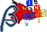

Hi, I'm betaveros. This used to be one of many vaguely comparable home pages I had made, but now I have a domain name and all and my home page is pretty clearly beta.vero.site, so instead here are some things on GitHub Pages.
- interactive binary operations on 32-bit numbers
- extra Advent of Code stats
- hyperpolymorph (based on clarkgrubb/hyperpolyglot, hyperpolyglot.org)
- VisualSort (forked from thedufer/VisualSort)
- 2014-algo
cs/, my cheat sheet
Moderately significant/interesting GitHub projects:
- bcodex (or as a JS web app)
- Paradoc
- Castlefall
- Gridderface
- xxb
Other miscellaneous HTML pages:
- web
- Parallax scrolling experiment
- icosahedron
- clicker (resurrected from 2010)
- key-capturer demo
- avatar
- times
- text
- data
- math
- puzzles
These images used to be here for various reasons. (I'm realizing as I write this that it sounds like a puzzle, it's not)
